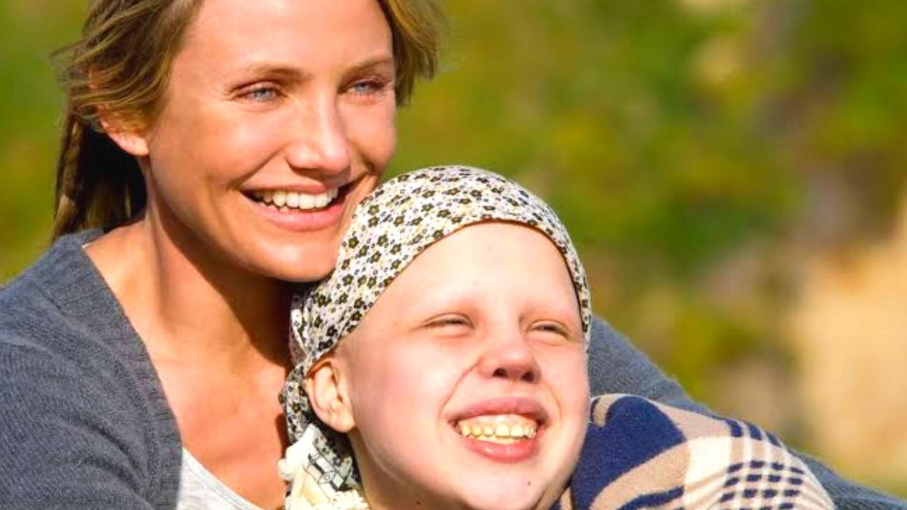
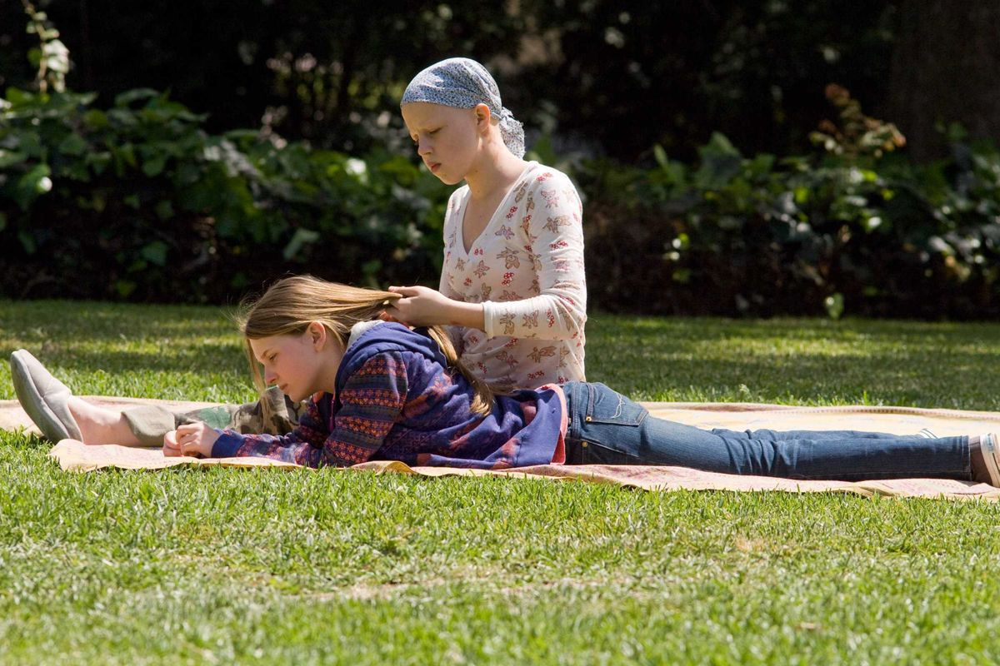
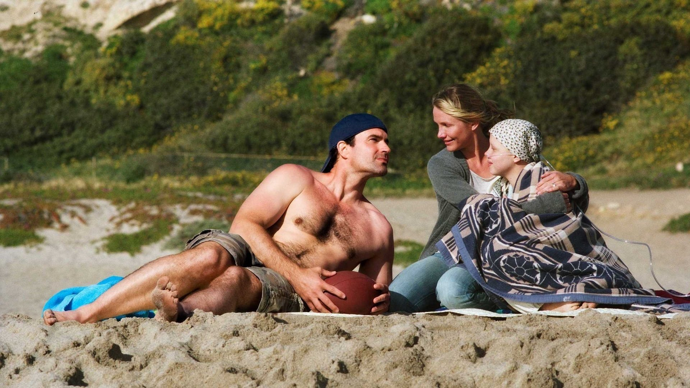

- Sendo uma adaptação de "A guardiã da minha irmã", Anna Fitzgerald foi concebida para ajudar a salvar sua irmã doente. Em seu pouco tempo de vida, ela já passou por várias cirurgias na tentativa de curá-la. Mas agora Anna leva seus pais ao tribunal, pois quer ser emancipada.
- 11 de setembro de 2009
- Drama
- No filme nos deparamos com uma ótima situação sobre ética e moral, aonde Anna, que simplesmente nasceu para suprir as necessidades da doença da sua irmã mais velha, Kate, desde o momento em que nasceu, passando por vários procedimentos médicos para salvar a vida de sua irmã. Sua mãe Sara sempre fez até o impossível para salvar a vida de Kate, se doou tanto a sua filha, que acabou se esquecendo de todo o sofrimento que Anna passava nos procedimentos médicos, esqueceu de seu outro filho, de seu marido, se sua carreira profissional e até mesmo de viver sua própria vida.
- Até que chegou o momento em que Anna contrata um advogado para processar Sara e conseguir sua emancipação médica, nesse momento começou a briga na justiça. Ao passar do filme Kate piora muito e precisa urgentemente da doação do rim de Anna, que se recusa a doa-lo, o que era muito estranho pois ela amava muito sua irmã. No tribunal, os ânimos se exaltam e o irmão de Anna, Jesse, revela que ela só havia começado com aquele processo porque Kate não queria mais viver, e Sara estava tão ocupada em salvar a vida dela que não percebeu todo o sofrimento que havia se tornado a vida da filha
- No nosso ponto de vista Anna é a personagem mais corajosa e menos egoísta de todo o filme, porque quebrou todas as leis éticas, morais e o seu próprio amor pela irmã, por vê-la sofrendo tanto ao ponto de realizar o seu desejo de deixá-la partir, algo que a própria mãe de Kate não teve, teve coragem. Anna abriu mão da sua irmã para deixá-la descansar
Sinopse:
Subir
  
Ano de lançamento:
Subir
Gênero:
Subir
Minha opnião sobre o filme, Alerta de spoiler:
Subir